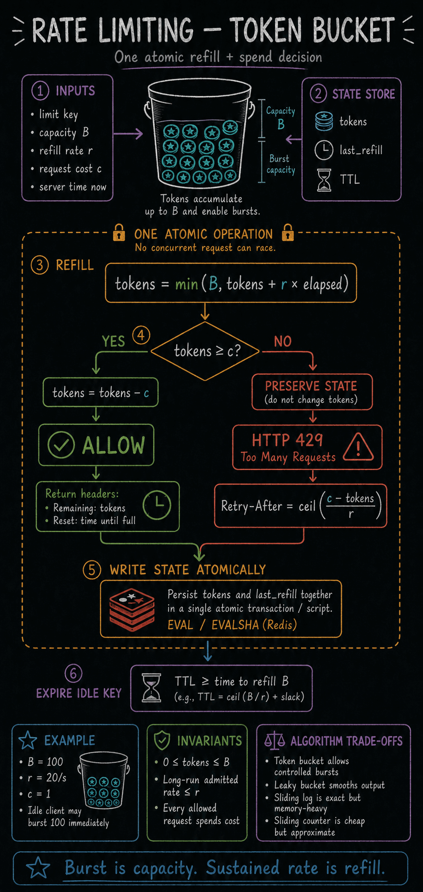

https://frosty110.github.io/js-drill/assets/system-design/infographics/components/c05/request-decision.pngThe stored state is tokens plus the last refill timestamp. One atomic script computes elapsed refill, caps the bucket at capacity, spends the request cost when possible, and returns the remaining budget and reset estimate.
Rate limiting protects a service from overload and abuse by capping how many requests a client may make in a window. This section covers the four canonical algorithms (token bucket, leaky bucket, fixed-window counter, and the two sliding-window variants), where in the stack to enforce limits, how to do it accurately across a distributed fleet, and how the server signals a throttled client.
All questions, model answers and diagrams for Rate Limiting →